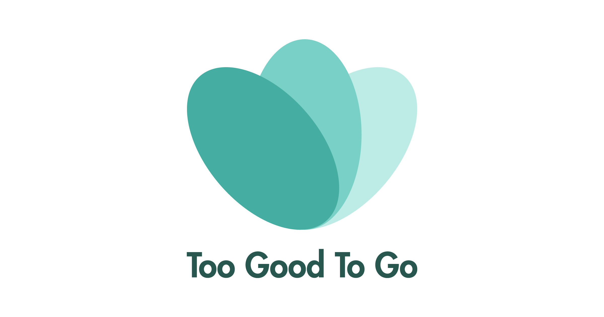
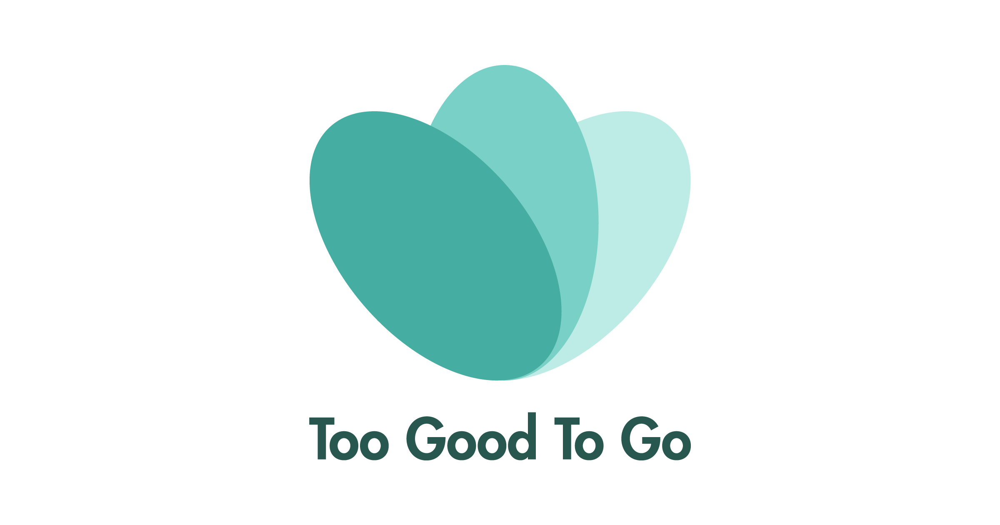

3 FANTASTISKE APPS SOM GØR AFTENSMADEN NEMMERE
Hvordan kan jeg spare penge på min mad? Bare rolig, vi har nogle idéer til dig.
1. For resten
• Platform: Android og iOS
• Pris: Gratis
Forbrugerforrådet vil ændre mentaliteten på danskernes vaner med denne fantastiske app. Smider du ligesom mange andre studerende rester ud, så skal du benytte dig af denne app. For Resten gør det nemt for dig at opbevare og få brugt alle dine råvarer og rester efter måltider. Det vil hjælpe den almindelige studerende med at spare penge, tid og besvær i hverdagen. Du bliver klogere på opbevaring, holdbarhed og får en overordnet forståelse for hvornår maden skal smides ud. Denne app giver dig mulighed for at finde nye opskrifter, tips og hjælper også miljøet da det minimerer madspild.
2. Too-Good-To-Go
• Platform: Android og iOS
• Pris: Gratis (tilbuddene i appen koster penge)
Er du også træt af at købe ind i dyre domme? Så er Too-Good-To-Go noget for dig. Denne app forbinder forbrugeren med restauranter som har en overflød af mad de ikke har fået solgt, dette gør at det lovmæssigt skal smides ud, men dette betyder ikke at maden er dårlig. Appen sørger for at forbrugeren sparer en masse penge på alle råvarer, der forbindes til den restaurant du køber fra. Du kan købe fra supermarkeder, restauranter, bagerier som vil give dig en betydeligt lavere pris for deres produkter, da det er overskydende madvarer. Appen sætter forbrugeren i forbindelse med en såkaldt ”lykkepose”, herefter vælger du afhentningstidspunkt og møder op – Du gør tab til indtjening, hjælper planeten og sparer penge på samme tid.
3. eTilbudsavis
• Platform: Android og iOS
• Pris: Gratis
eTilbudsavis er en fantastisk app, hvis du heller ikke helt ved hvad du skal handle ind. Appen hjælper dig med at finde tilbud online og appen indeholder alle de forskellige supermarkeder. Appen har også en søge funktion, som gør det nemmere for forbrugeren at lede efter præcis de tilbud de mangler. Supermarkederne er rangeret efter lokation, så de forbinder dig med de butikker der er tættest på dig. Virkelig en god app, hvis du både vil spare penge på råvarer men også mangler en nem og funktionel app til hverdagen.